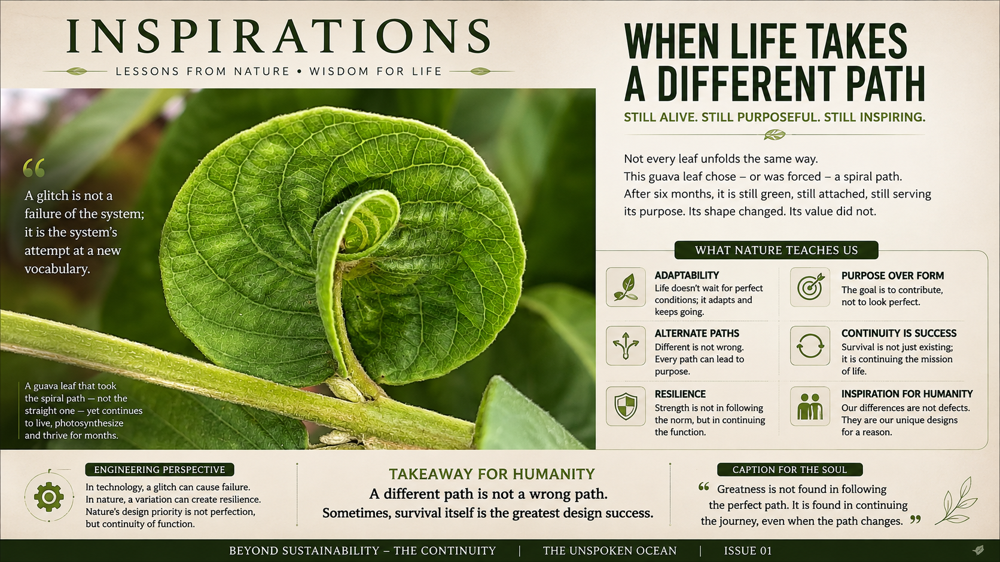

One photograph.
One page.
No complicated jargon.
Just one overlooked lesson from nature.

"How strong is the thread?"
"How little thread is actually needed?"
That single change in perspective is where innovation begins.
And perhaps that's the greatest inspiration I took from this image—not admiration for the spider, but admiration for Nature's habit of solving difficult engineering problems with elegant simplicity.